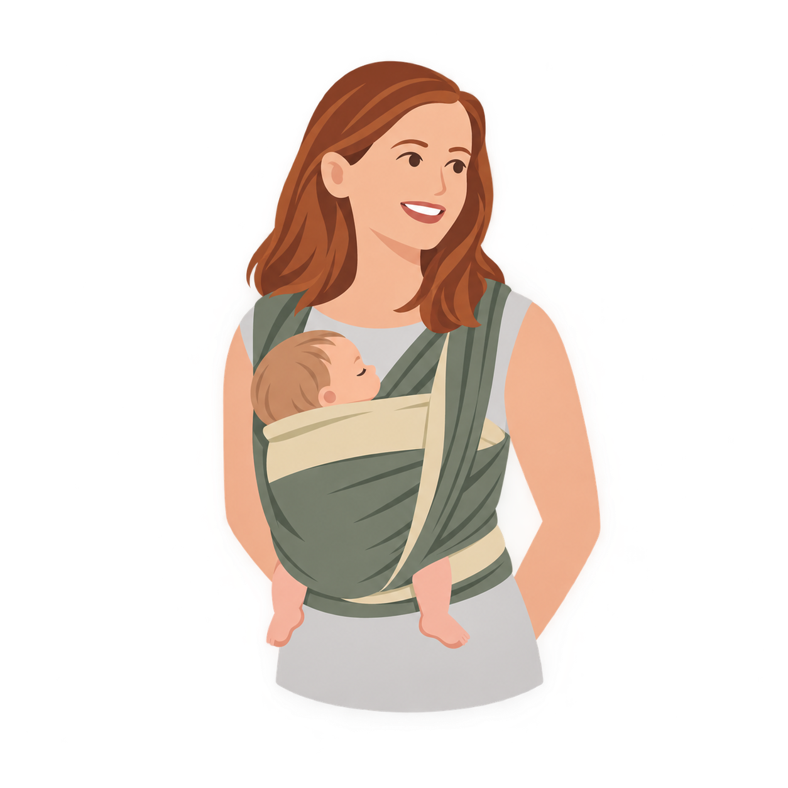
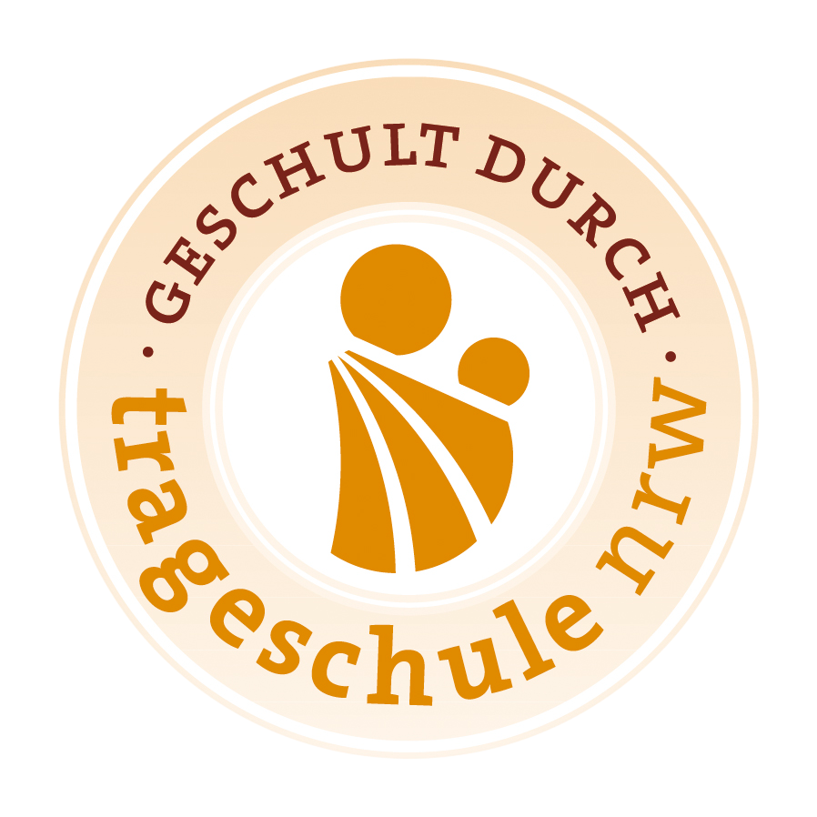
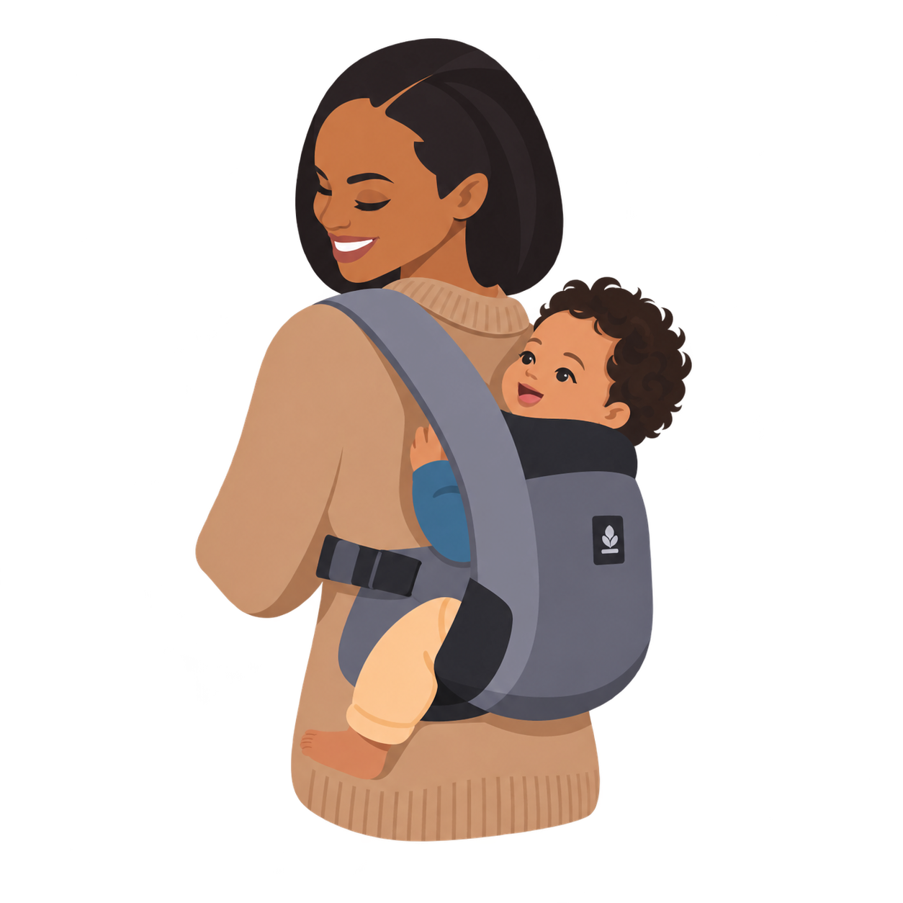
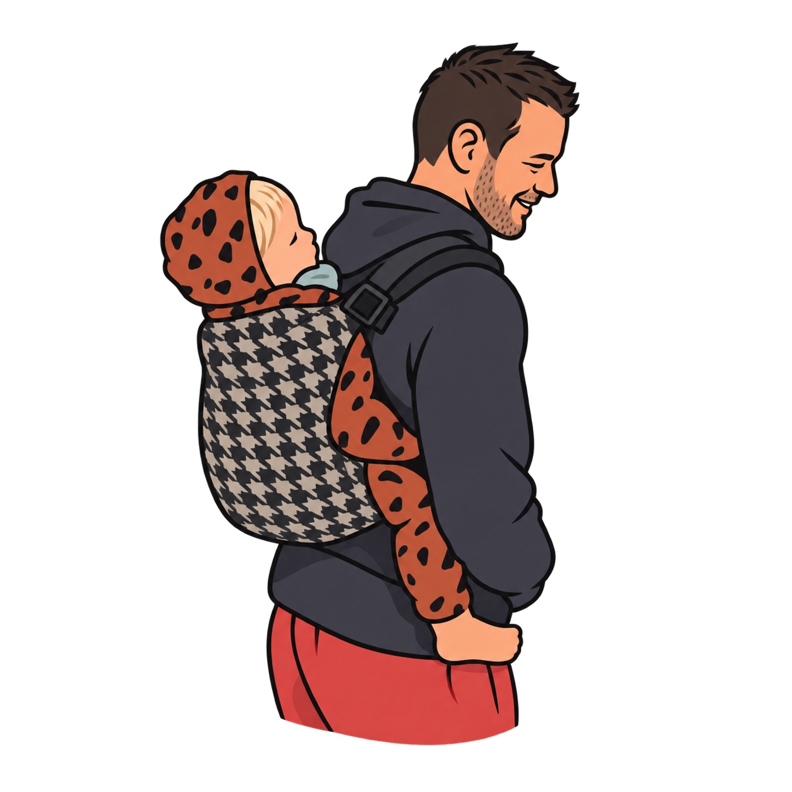

Tragetuch-Beratung
Du möchtest dein Baby im Tragetuch tragen? Ich zeige dir in Ruhe Bindetechniken, die auf deine Bedürfnisse abgestimmt sind. Gemeinsam finden wir eine Bindeweise, die sich für euch gut anfühlt.
Trageberatung mit Herz und Fachwissen
in Viersen und Umgebung
Ich bin Michelle, ausgebildete Trageberaterin und selbst Mama eines Traglings. Ich begleite dich dabei, dein Baby sicher, bequem und bindungsorientiert zu tragen, ganz individuell und passend zu eurem Alltag. Egal, ob du verschiedene Bindetechniken für das Tragetuch lernen möchtest, Unterstützung beim Rückentragen suchst oder dir eine neue Tragehilfe zulegen möchtest. Gemeinsam finden wir eine Lösung, die sich für dich und dein Baby gut anfühlt.

Über mich
Hallo, ich bin Michelle und im Oktober 2025 Mama geworden. Wie viele andere habe ich in der Schwangerschaft ein elastisches Tragetuch gekauft und mir zunächst nicht weiter Gedanken über das Tragen gemacht. Von meiner Mutter bekam ich außerdem ihr altes Didymos Tuch und ich dachte, dass man es sowieso erst später benutzen könnte, wenn das Baby größer ist.
Als unser kleiner Schatz dann da war, stellte sich ziemlich schnell heraus, dass wir das Binden mit dem Tuch besser vorher hätten üben sollen. Mein Mann hatte es zwar einmal im Geburtsvorbereitungskurs ausprobiert, aber die Tragepuppe dort war definitiv geduldiger. Zu Hause haben wir uns außerdem immer wieder gefragt: Ist das Tuch zu eng oder zu locker?
Meine Hebamme hat uns dann netterweise ihre Trage geliehen und das hat uns in den ersten Wochen wirklich gerettet. Unser Kleiner war besonders bei Papa sehr viel darin unterwegs. Als mein Mann wieder arbeiten war und die ersten Wochen des Wochenbetts überstanden waren, habe ich mich selbst ans Tragen gewagt.
Mit dem elastischen Tuch konnte ich mich aufgrund fehlender Übung zunächst nicht so richtig anfreunden, und auch der Bauchgurt der Trage fühlte sich an meinem Bauch noch nicht angenehm an. Also nahm ich mir das gewebte Tuch und probierte viele verschiedene Bindeweisen aus. So lange, bis ich eine gefunden hatte, die für mich bequem war und auch dem Kleinen gefiel.
Dadurch habe ich meine Leidenschaft fürs Tragen entdeckt. Ich fand es spannend, immer wieder verschiedene Bindeweisen auszuprobieren und herauszufinden, was für uns am besten funktioniert.
Aus meiner eigenen Erfahrung und meiner Begeisterung für das Tragen entstand schließlich der Wunsch, mein Wissen fundiert weiterzugeben. Deshalb habe ich eine Ausbildung zur Trageberaterin gemacht und begleite heute andere Familien auf ihrem individuellen Weg zu einer entspannten Tragezeit.
Meinen Sohn trage ich immer noch, aber mittlerweile nur noch auf dem Rücken.
Meine Leistungen
Jede Familie ist einzigartig und genauso individuell darf auch die passende Trageweise sein. Es gibt nicht die eine Trage oder die eine Bindeweise, die für alle passt. Gemeinsam schauen wir, was zu euch und eurem Alltag passt, damit sich das Tragen für euch sicher und bequem anfühlt.

Du möchtest dein Baby im Tragetuch tragen? Ich zeige dir in Ruhe Bindetechniken, die auf deine Bedürfnisse abgestimmt sind. Gemeinsam finden wir eine Bindeweise, die sich für euch gut anfühlt.

Rückentragen kann im Alltag eine echte Erleichterung sein, denn dadurch hast du wirklich beide Hände frei. Ich zeige dir Schritt für Schritt, wie du dein Baby sicher und entspannt auf den Rücken bekommst.

Gemeinsam testen wir verschiedene Modelle oder schauen uns deine vorhandene Trage an. Wir klären deine Fragen und finden heraus, wie du dein Baby sicher und bequem tragen kannst.
Meine Expertise
Als ausgebildete Trageberaterin verbinde ich fundiertes Fachwissen mit meiner eigenen Erfahrung als Mama. Ich unterstütze dich mit praktischer Anleitung, einem offenen Blick für deine individuelle Situation und viel Verständnis dafür, dass nicht jede Lösung für jede Familie gleich gut funktioniert.
Mir ist wichtig, dass du dich während der Beratung wohlfühlst und alle Fragen stellen kannst, die dir auf dem Herzen liegen. Denn Tragen entlastet nicht nur dich in deinem Alltag, sondern schenkt deinem Baby einen sanften Start in die Welt.
Du bekommst bei mir keine Lösung von der Stange, sondern eine Empfehlung, die wirklich zu euch passt. Besonders am Herzen liegt mir das Tragen auf dem Rücken, was oft sehr unterschätzt wird.
Kontakt
Du bist dir noch unsicher, welche Trageweise oder Beratung zu euch passt? Schreib mir gerne eine Nachricht. Wir schauen gemeinsam, was du brauchst und welche Unterstützung für dich und dein Baby sinnvoll ist.
E-Mail: info@tragezeit-michelle.de
Ort: Viersen und Umgebung